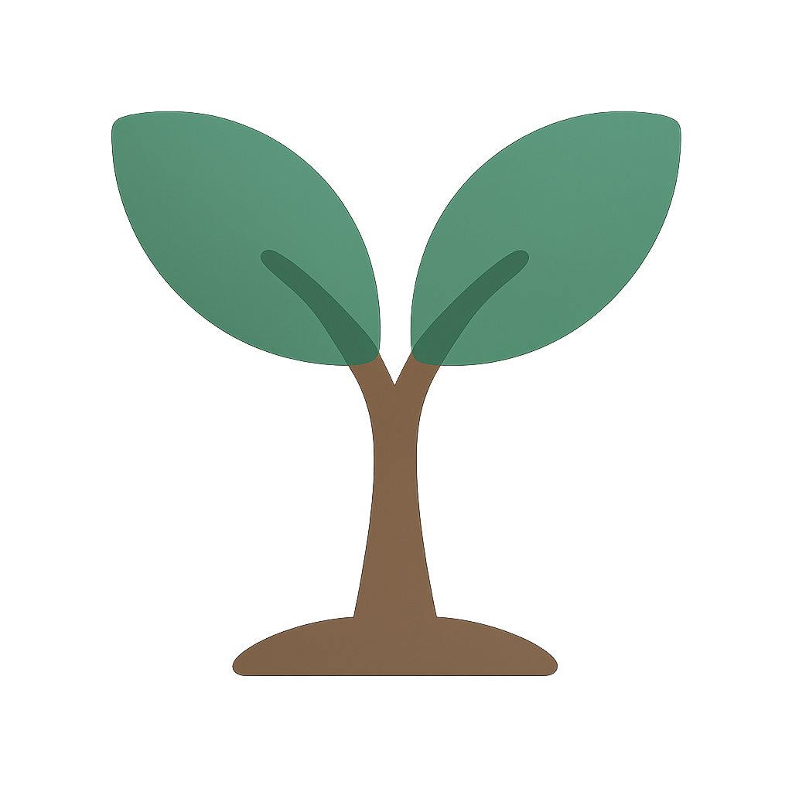

오후의 식물
홈
초록 이야기
나의 식물
식물 찾기
구독하기
Login
+
더 불러오기
초록 이야기 쓰기
📷 이미지 첨부하기
0 / 2000
취소
올리기
×
오후의 식물
Welcome Back
Email
Password
Login
Don't have an account?
Sign Up
오후의 식물
Create Account
Name
Email
Password
[필수]
이용약관
에 동의합니다.
[필수]
개인정보처리방침
에 동의합니다.
Create Account
Already have an account?
Login
🏠
홈
🌱
초록 이야기
🪴
나의 식물
💬
식물 상담소
⭐
구독